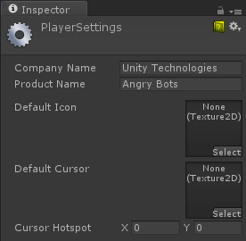
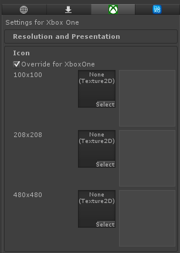
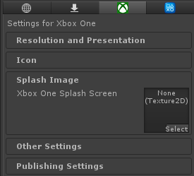
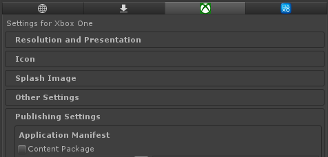
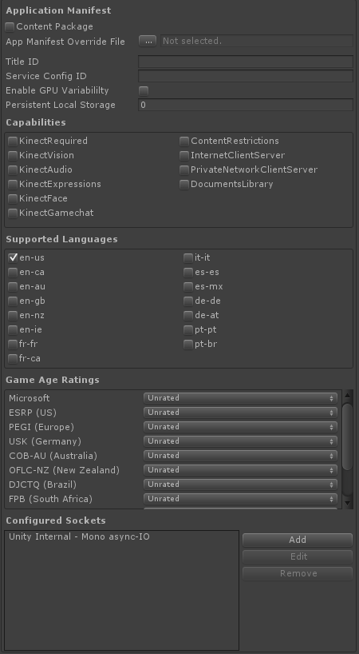
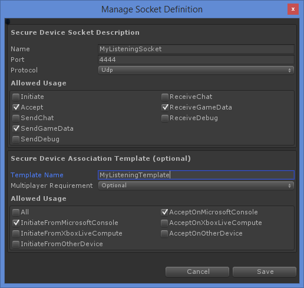
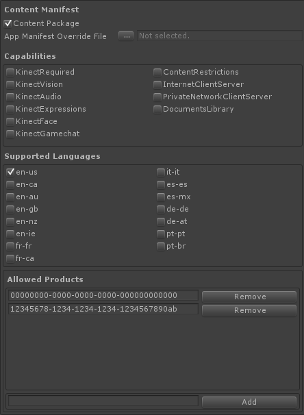
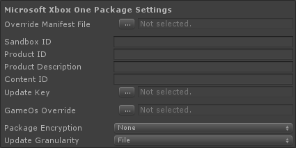
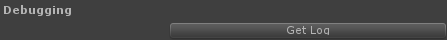

Player settings for the Xbox One platform
There are many Player settings that are unique to the Xbox One. Others you may be familiar with and are described on the main Player settings, but they are used a little differently on the Xbox One. Most of the Player settings control the values that are used in your appmanifest.xml file. The purpose and format of the appmanifext.xml file itself is described in the XDK documentation: Application Manifest Schema.
Global settings

These are settings that apply to any Project you create. You've likely already set these if you're working with an existing project. Here are some things to keep in mind about this properties for the Xbox One.
Company Name and Product Name
These are used in the appmanifest.xml file as the DisplayName and PublisherDisplayName respectively. These are also used to create the AUMID and PFN for your game which are useful for debugging.
Per-Platform Settings > Xbox One
The settings you will find in this section ony affect the Xbox One build unless otherwise noted in the UI. This section provides information about the settings that are unique to (or behave differently on) the Xbox One. See the main documentation on the Player settings for settings not mentioned here.
Icons

Here, you can set the icons that are used for your game on the Xbox One
| Property: | Function: |
|---|---|
| Override for Xbox One | Set this property to set the icons. If this is not set, then the default Unity logos will be used. |
| 100x100 | Shown in notification and companion center. |
| 208x208 | Shown when your game is in the recently used or pinned item section. |
| 480x480 | Shown in collections and notification center. For DLC, this is used to identify the content within the title. |
Splash Images

This is the image that is used as the initial splash screen which is shown while the Xbox One Title OS is loading and during the initial loading phase of your game. If this is not set, the splash screen will be the Unity logo on a green background.
Other Settings > Optimization > AOT Settings

Your game scripts are compiled to native code when you build your project for Xbox One rather than at runtime. This process is called Ahead Of Time compilation. These are settings you can use to control how that happens.
- AOT Compilation Options:
- Debug/Development: -debug --optimize=-linears --aot=full,asmonly,write-symbols,soft-debug,print-skipped
- Master --aot=full,asmonly,nodebug,print-skipped
- Stripping Level: Controls the level of bytecode stripping. See the Xbox One: Ahead Of Time Compiler page for more details. (This setting is only available with the Mono scripting backend.)
- Strip Engine Code Enable code stripping. (This setting is only available with the IL2CPP scripting backend.)
Publishing Settings
This section holds the settings that are required to create the package for your game. These settings correspond to data that winds up in the Unity generated appmanifest.xml file. The terms used are the same as used in the XDK, and you can reference the XDK documentation for more information on how these settings work. Some of the fields here must be set with identifiers for different aspects of your game, which are identifiers you must receive from Microsoft. There are also options to tell the Xbox One that you want to use certain features, such as the Kinect. If you want to use these features, you must enable them in these Publishing Settings as well as write the code to leverage the feature.

The Content Package checkbox tells unity that your project should be built as a standalone game or as a content package to an existing game. The properties in the manifest file will be different between the two. When you have this box checked, you will be building a content package and you'll see the Content Package checkbox is always visible.
Application Manifest

The properties here effect the way your game and the Xbox One interact with each other.
| Property | Function |
|---|---|
| Content Package | Toggle between building an game/application or a content package. |
| App Manifest override File | Set this to a file to use as an appxmanifest.xml file for your game or content package. If this is set, none of the Global Settings, Application Manifest or Content Manifest properties will effect the appxmanifest.xml, and it is your responsibility to fill out the manifest file correctly. |
| Title ID | A unique ID your game uses when interacting with Xbox Live Services. You must get this ID from Microsoft. You will not be able to use any of the Xbox Live Services if this isn't set properly. |
| Service Config ID | This a unique ID for accessing certain data through Xbox Live Services. You must get this ID from Microsoft. You will not be able to use certain aspects of the Xbox Live Services if this is not set properly. |
| Enable GPU Variability | Turns on notifications that you are gaining/losing GPU resources, such as when an snapped app is opened or closed. |
| Persistent Local Storage | Sets the size of your game's Persistent Local Storage (PLS). PLS is one type of local storage available to Xbox One titles. Its purpose and characteristics are documented in the Local Storage page of the XDK documentation. From the context of C# code in Unity, the string path to the PLS area is available as Application.persistentDataPath. |
| Capabilities | Features that must be explicitly marked as used if your game uses them. See the XDK documentation for more details |
| Supported Languages | The languages that your game supports. You will have to facilitate the localization of assets within your game. See the Manifest Localization page for more information. |
| Game Age Ratings | The rating you've been given from the various rating entities. |
| Configured Sockets | You must specify which sockets you will use in your game. Clicking the or buttons will bring up the Secure Device Socket Description window. See the Networking page for more information. |
Secure Device Socket Description

Each socket that you use on the Xbox One must be described in the manifest. Please see the Networking page as well as the XDK for more information on the following properties and how networking works on the Xbox One.
Secure Device Socket Descriptions
| Property | Function |
|---|---|
| Name | A name for the socket. This is only used to identify it in the Unity Editor and in the appxmanifest.xml file. |
| Port | The port number this socket will use. The XDK lists which port numbers you may use. |
| Protocol | The protocol for packets sent or received with this socket. |
| Allowed Usage | Specifies what you will do with this socket. |
Secure Device Association Template
This sets up a template that can be used for multiple connections. Not all games will need to use this, thus these properties are optional. Please see the XDK for more information on these properties.
| Property | Function |
|---|---|
| Template Name | The name of the template. This must be filled in to activate the other Secure Device Association Template properties. |
| Multiplayer Requirement | Set the multiplayer requirements for this template. The XDK uses the term Multiplayer Session Requirement |
| Allowed Usage | Settings for what you will be doing with this template. |
Content Manifest

The Content Manifest section shares the following properties with the Application Manifest.
- App Manifest Override File
- Capabilities
- Supported Languages
The Allowed Products property is unique to the Product ID and sets which games are compatible and thus allowed to load this content package. The text field at the bottom lets you enter Product IDs, and you add it to the list by pressing the Product IDs that you've already added will have a button next to them that you can use to remove them from the list.
Package Settings

These settings control how your game or content package is turned into a package. The Build Package Build Setting must be enabled to build a package. See the Packaging page and the XDK documentation for more details.
| Property: | Function: |
|---|---|
| Package Manifest Override File | Set this to a file to use as the manifest given to the XDK's makepkg.exe tool. If this is set, none of the other Launch Scene Range Build Setting will have an effect. |
| Sandbox ID | This is an ID for a private environment for your game's data. This is an optional setting for security purposes and is not applicable for cert as your game will be locked to the RETAIL sandbox when shipping. This is only needed if you want to ensure that your game cannot connect to any other sandbox during development. You must use one of the existing sandboxes described in the XDK documentation or get your own, unique ID from Microsoft. |
| Product ID | An ID identifying your product. This is an ID that is given to you by Microsoft. Multiple titles can be identified as the same product. |
| Product Description | A description of your product. This text is used for the Properties > Description section of your appxmanifest.xml file. If blank, the text will be the Product Name from the global Player settings. |
| ContentID | Another ID for your game and content packages. This is an ID that is given to you by Microsoft, though a dummy ID can be used during development. |
| Update Key | A file used for the /updateKey option of makepkg.exe. |
| GameOs Override | Specify which game OS file to embed into the package. Leave blank to use the default game OS, which is a part of the XDK installation. |
| Package Encryption | How to encrypt your package. These correspond to command line options for makepkg.exe: None = /lu option, Devkit Compatible = no option, Retail Signing = /l option |
| Update Granularity | Corresponds to the /updcompat option for makepkg.exe. File granularity is strongly recommended. |
Debugging

This section has a button that you can use to copy the debug.log file for your game to your PC. See the Debugging page for details about this file.